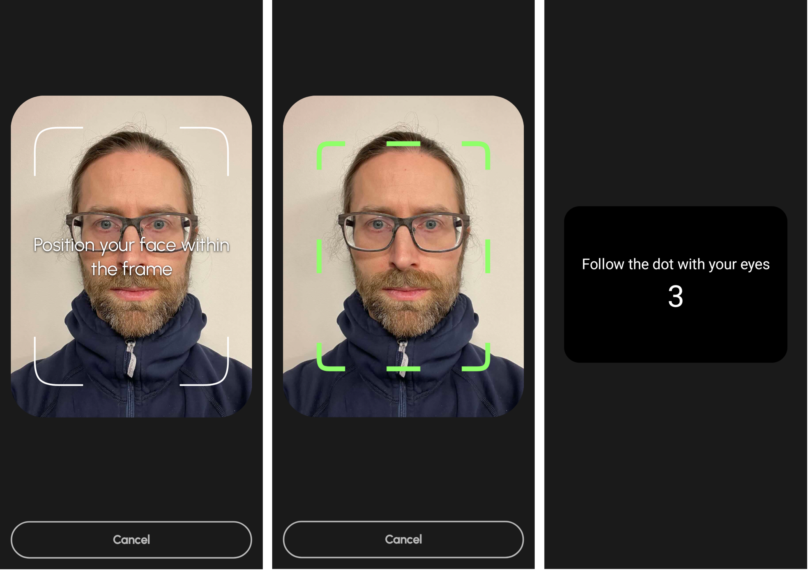
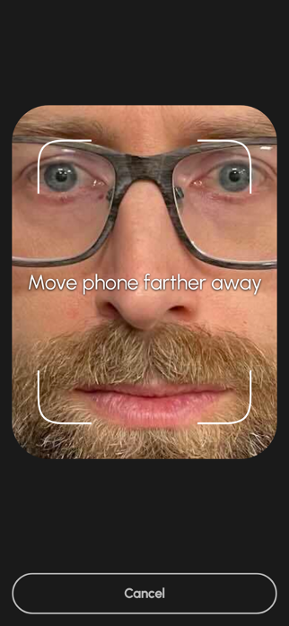

Integrating with Your App
Usage
To use IRIS integrate in your project, follow these steps
-
Add IRIS integrate dependency to your app module build.gradle. Newest version can be found on MavenCentral
-
IRIS integrate requires minSdk of 30. If you app has a lower min sdk. Consider bump version or check the section about using IRIS integrate with a lower minSdk than 30
-
Add these lines to your manifest file
AndroidManifest.xml<manifest xmlns:android="http://schemas.android.com/apk/res/android" xmlns:tools="http://schemas.android.com/tools"> <uses-feature android:name="android.hardware.camera" android:required="false" /> <uses-permission android:name="android.permission.CAMERA" /> <uses-permission android:name="android.permission.HIGH_SAMPLING_RATE_SENSORS" tools:ignore="HighSamplingRate" /> <uses-permission android:name="android.permission.INTERNET" /> <application android:largeHeap="true" > <!-- Add this line to your application block --> </application> <!-- Rest of your manifest code --> </manifest> -
Add SighticView to your app. You must let it occupy the whole screen.
- The app user aligns and then performs the scan by following the dot with their eyes.
- If the scan was successful a SighticRecording object is returned.
- Call the performInference(apiKey: String) function on the recording.
- Wait for result from the Sightic Analytics server.
- A SighticInference object is returned which contains the scan result.
- AlignmentError represent errors that occur during the scan. SighticError represent errors that occur during the analysis of a recording.
QuickStart app
Sightic Analytics provides a QuickStart app that shows how to use the framework.
Gradle
Add IRIS integrate as a gradle dependency.
Camera access
IRIS integrate need access to the device's camera, thus you must add camera permission and feature in your manifest file. Requesting runtime permissions will be taken care of inside SighticView
Sightic view
- Add SighticView to your app. You must let the view occupy the whole screen.
- Provide a completion lambda that accepts a SighticResult of either SighticRecording or a SighticError.
Alignment
The alignment view helps the app user position their face in front of the screen. The viewfinder turns green when alignment is correct followed by a countdown before the scan starts.

Scan
A black moving dot is shown during the scan. The app user follows the dot with their eyes while keeping the phone still. The framework records the face of the user while the dot is shown.
The alignment view reappears if the user misaligns while doing the scan, for example by moving the device too close. A hint is provided on how to fix the alignment. The scan restarts from the beginning after the user has made corrections. We call this soft reset. If the user triggers soft reset more than three times the control is returned back to the host app with a AlignmentError.

Recording
- SighticView triggers the completion handler back to the app to indicate that the recording has finished.
- The app receives a SighticResult of either SighticRecording or SighticError.
- SighticError is a sealed class with errors that can occur while doing the scan. One example is InterruptedError which is triggered if the user moves the app into the background.
Inference request
- The host app calls performInference(apiKey: String) on the SighticRecording object to send the recorded data to the Sightic Analytics server for analysis.
- The app receives a SighticInference object with the scan result or a SighticError if an error occurs. We get a InferenceError if we for example provide an invalid API key or a NoNetworkConnection if there is no internet connection.
- SighticInference contains hasImpairment that indicates whether the scan subject is possibly impaired.
Using IRIS integrate with a lower minSdk than 30
If your app has a lower minSdk than 30 you need some additional setup to get it to work
Add this to you manifest file
When you add SighticView you need to check if users device is running on at least minSdk 30